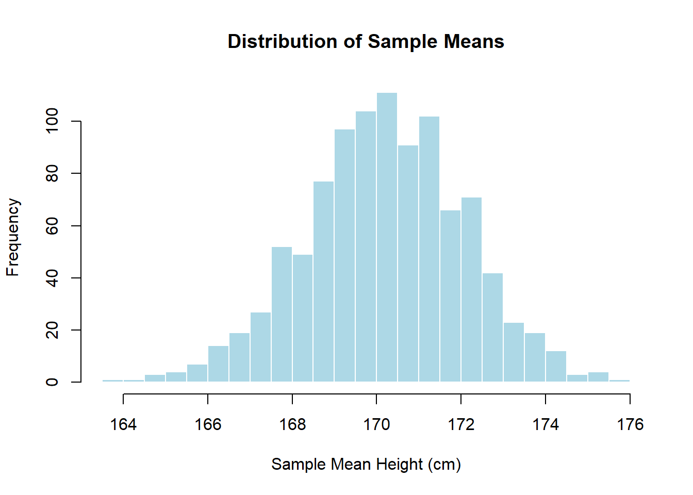
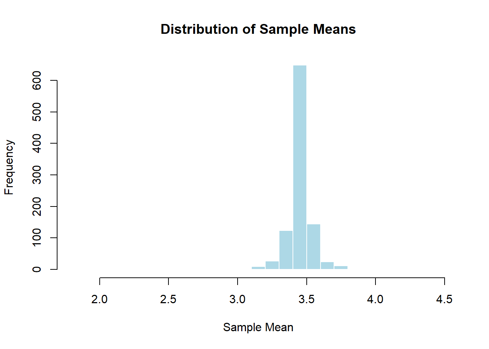

Chapter 3 Testing and Estimation - Large vs. Small Samples
This lecture note explores the concepts of testing and estimation in the context of large and small samples.
3.1 Central Limit Theorem (CLT)
The Central Limit Theorem (CLT) is a fundamental concept in statistics that describes the behavior of sample means when drawing repeated samples from a population. It states that, regardless of the shape of the population distribution, the distribution of sample means will tend to be approximately normal as the sample size increases.
3.2 Conceptual Explanation
The CLT is based on three key principles:
Sampling Distribution: When we draw multiple samples from a population and calculate the mean of each sample, we create a sampling distribution of the sample means.
Approximate Normality: The distribution of sample means will be approximately normal if the sample size is sufficiently large, regardless of the shape of the population distribution. This is particularly true for sample sizes greater than 30.
Mean and Standard Deviation: The mean of the sample means will be approximately equal to the population mean, and the standard deviation of the sample means (standard error) will decrease as the sample size increases.
Example 1 Suppose we want to understand the distribution of the mean height of students in the campus of Gadau. We’ll collect the heights of 10000 students as our population data.
# Simulate student heights in Gadau campus
set.seed(123)
student_heights <- rnorm(1000, mean = 170, sd = 10)
# Display summary statistics of student heights
summary(student_heights)## Min. 1st Qu. Median Mean 3rd Qu. Max.
## 141.9 163.7 170.1 170.2 176.6 202.4# Number of samples
num_samples <- 1000
# Sample size
sample_size <- 30
# Initialize a vector to store sample means
sample_means <- numeric(num_samples)
# Take random samples and calculate means
for (i in 1:num_samples) {
sample <- sample(student_heights, sample_size)
sample_means[i] <- mean(sample)
}
# Plot the distribution of sample means
hist(sample_means, breaks = 30, main = "Distribution of Sample Means", xlab = "Sample Mean Height (cm)", col = "lightblue", border = "white") In the histogram above, we can observe that as the number of samples increases, the distribution of sample means becomes more symmetric and bell-shaped, resembling a normal distribution. This is consistent with the Central Limit Theorem.
Example 2: Rolling a Fair Die
Suppose we want to understand the distribution of the mean of rolling a fair six-sided die. We will simulate rolling the die 1000 times and calculate the mean for each set of rolls.
# Set seed for reproducibility
set.seed(123)
# Simulate rolling a fair six-sided die 1000 times
num_rolls <- 1000
die_rolls <- sample(1:6, num_rolls, replace = TRUE)
# Calculate the mean of each set of rolls
sample_means <- numeric(num_rolls)
for (i in 1:num_rolls) {
sample_means[i] <- mean(sample(die_rolls, i))
}
# Plot the distribution of sample means
hist(sample_means, breaks = 30, main = "Distribution of Sample Means", xlab = "Sample Mean", col = "lightblue", border = "white") ## Testing and Estimation of Binomial Distribution
3.2.1 Understanding the Binomial Distribution
Before we proceed, let’s quickly recap what the binomial distribution entails. The binomial distribution describes the probability of a certain number of successes in a fixed number of independent Bernoulli trials, each with the same probability of success. It is characterized by two parameters: the number of trials, denoted as \(n\), and the probability of success in each trial, denoted as \(p\).
Example Scenario
Dice Rolls: Rolling a regular six-sided die multiple times. The binomial distribution helps us predict how many times we might roll a specific number, like getting exactly three 6s out of ten rolls.
Light Switch: Turning a light switch on and off. Each time you flip the switch, it’s like a trial where you can either get light (success) or darkness (failure). The binomial distribution helps us estimate the probability of getting a certain number of successes (light) in a series of trials.
Bowling Pins: Knocking down bowling pins with a ball. Each time you roll the ball, you either knock down some pins or miss completely. The binomial distribution helps us calculate the likelihood of knocking down a certain number of pins in a given number of attempts.
Basketball Shots: Shooting basketballs into a hoop. Each shot can either go in (success) or miss (failure). The binomial distribution can help us figure out the chances of making a certain number of shots out of several attempts.
Example of a Binomial Distribution
Suppose in a university, 70% of students pass a certain course on their first attempt. If we randomly select 20 students from the university, what is the probability that exactly 15 of them will pass the course on their first attempt?
Using the binomial distribution, the probability of exactly 15 students passing the course is given by:
\[ P(X = 15) = \binom{20}{15} (0.70)^{15} (1 - 0.70)^{20 - 15} \]
Where:Plugging in the values:
\[ P(X = 15) = \binom{20}{15} (0.70)^{15} (0.30)^{5} \]
Calculating:
\[ P(X = 15) = \frac{20!}{15! \times (20 - 15)!} (0.70)^{15} (0.30)^{5} \]
\[ P(X = 15) = \frac{20!}{15! \times 5!} (0.70)^{15} (0.30)^{5} \]
\[ P(X = 15) = \frac{20 \times 19 \times 18 \times 17 \times 16}{5 \times 4 \times 3 \times 2 \times 1} (0.70)^{15} (0.30)^{5} \]
\[ P(X = 15) = 15504 \times (0.70)^{15} (0.30)^{5} \]
\[ P(X = 15) \approx 0.1073 \]
Therefore, the probability that exactly 15 of the 20 selected students will pass the course on their first attempt is approximately 0.1073.
3.3 Testing Large Samples
When dealing with large samples, we often utilize normal approximation to the binomial distribution due to the Central Limit Theorem (CLT). The CLT states that the sampling distribution of the sample mean will be approximately normally distributed for large sample sizes, regardless of the distribution of the population.
3.3.1 Z-Test for Proportions
In testing large samples for binomial distributions, we typically employ the Z-test for proportions. This test allows us to determine whether the proportion of successes in our sample significantly differs from a hypothesized value.
The formula for the Z-test statistic is:
\[ Z = \frac{{\hat{p} - p_0}}{{\sqrt{\frac{{p_0(1 - p_0)}}{n}}}} \]
Where: - \(\hat{p}\) is the sample proportion, - \(p_0\) is the hypothesized proportion under the null hypothesis, and - \(n\) is the sample size.
Binomial Testing Example
Suppose in a university campus, it is believed that 60% of the students own a laptop. To test this claim, a random sample of 200 students is taken, and it is found that 115 of them own a laptop.
We want to test whether the proportion of students owning a laptop is significantly different from the claimed proportion of 60%.
Hypotheses
Let \(p\) be the true proportion of students owning a laptop.
The null hypothesis (\(H_0\)) is that \(p = 0.60\), and the alternative hypothesis (\(H_1\)) is that \(p \neq 0.60\).
Test Statistic
We will use the Z-test for proportions to test the hypotheses. The test statistic is given by:
\[ Z = \frac{\hat{p} - p_0}{\sqrt{\frac{p_0(1 - p_0)}{n}}} \]
where:Given: \[\begin{align*} \hat{p} &= \frac{115}{200} = 0.575 \\ p_0 &= 0.60 \\ n &= 200 \end{align*}\]
Using these values, we can calculate the test statistic:
\[ Z = \frac{0.575 - 0.60}{\sqrt{\frac{0.60(1 - 0.60)}{200}}} \]
\[ Z = \frac{-0.025}{\sqrt{\frac{0.60(0.40)}{200}}} \]
\[ Z \approx \frac{-0.025}{\sqrt{\frac{0.24}{200}}} \]
\[ Z \approx \frac{-0.025}{\sqrt{0.0012}} \]
\[ Z \approx \frac{-0.025}{0.0346} \]
\[ Z \approx -0.7225 \]
Conclusion
The calculated value of the test statistic is \(Z = -0.7225\).
At a significance level of 0.05 (or 95% confidence level), the critical values for a two-tailed test are \(\pm 1.96\).
Since \(-1.96 < -0.7225 < 1.96\), we fail to reject the null hypothesis.
Therefore, there is not enough evidence to conclude that the proportion of students owning a laptop is significantly different from 60%.
3.4 Estimation of Parameters
3.4.1 Point Estimation
Point estimation involves estimating a single value for a population parameter based on sample data. For the binomial distribution, we often estimate the population proportion \(p\) using the sample proportion \(\hat{p}\).
3.4.2 Interval Estimation
Interval estimation, on the other hand, provides a range of values within which the population parameter is likely to lie. For large samples, the confidence interval for the population proportion can be calculated using the normal approximation:
\[ \hat{p} \pm Z_{\alpha/2} \times \sqrt{\frac{{\hat{p}(1 - \hat{p})}}{n}} \]
Where \(Z_{\alpha/2}\) is the critical value from the standard normal distribution corresponding to the desired level of confidence.
Example
Suppose in a university campus, it is believed that 60% of the students own a laptop. To estimate the true proportion of students owning a laptop, a random sample of 200 students is taken, and it is found that 115 of them own a laptop.
We want to construct a 95% confidence interval for the true proportion of students owning a laptop.
Interval Estimate
For large samples, the confidence interval for the population proportion can be calculated using the normal approximation:
\[ \hat{p} \pm Z_{\alpha/2} \times \sqrt{\frac{\hat{p}(1 - \hat{p})}{n}} \]
where:Given: \[\begin{align*} \hat{p} &= 0.575 \\ n &= 200 \\ \alpha &= 0.05 \end{align*}\]
At a 95% confidence level, \(Z_{\alpha/2} = 1.96\).
Plugging in the values:
\[ \text{Margin of Error} = 1.96 \times \sqrt{\frac{0.575(1 - 0.575)}{200}} \approx 0.0704 \]
\[ \text{Lower Bound} = 0.575 - 0.0704 \approx 0.5046 \]
\[ \text{Upper Bound} = 0.575 + 0.0704 \approx 0.6446 \]
Therefore, the 95% confidence interval for the true proportion of students owning a laptop is approximately \((0.5046, 0.6446)\).
3.5 Small Sample Situations
In small sample situations, the normal approximation may not be appropriate. Instead, we rely on exact methods such as the binomial test or the chi-square goodness-of-fit test.
3.5.1 Binomial Test
The binomial test is used to assess whether the observed number of successes in a sample significantly differs from the expected number of successes under a specified null hypothesis. It directly calculates the probability of observing the given number of successes or more extreme outcomes.
Example
Suppose in a university campus, it is believed that 60% of the students own a laptop. To test this claim, a random sample of 20 students is taken, and it is found that 11 of them own a laptop.
We want to test whether the proportion of students owning a laptop is significantly different from the claimed proportion of 60%.
Hypotheses
Let \(p\) be the true proportion of students owning a laptop.
The null hypothesis (\(H_0\)) is that \(p = 0.60\), and the alternative hypothesis (\(H_1\)) is that \(p \neq 0.60\).
Test Statistic
For small sample situations, we can use the binomial test to assess whether the observed number of successes in a sample significantly differs from the expected number of successes under the null hypothesis.
The test statistic for the binomial test is the number of successes (\(k\)).
Calculation
Given: \[\begin{align*} k &= 11 \\ n &= 20 \\ p_0 &= 0.60 \end{align*}\]
Using these values, we can calculate the probability of observing 11 or fewer successes under the null hypothesis:
\[ P(X \leq 11) = \sum_{x=0}^{11} \binom{20}{x} (0.60)^x (0.40)^{20-x} \]
Using statistical software or tables, we find \(P(X \leq 11) \approx 0.049\).
Since \(P(X \leq 11) < 0.05\), we reject the null hypothesis.
The observed proportion of students owning a laptop is significantly different from the claimed proportion of 60%.
Binomial Testing Example
Suppose in a university campus, it is believed that 60% of the students own a laptop. To test this claim, a random sample of 200 students is taken, and it is found that 115 of them own a laptop.
We want to test whether the proportion of students owning a laptop is significantly different from the claimed proportion of 60%.
Hypotheses
Let \(p\) be the true proportion of students owning a laptop.
The null hypothesis (\(H_0\)) is that \(p = 0.60\), and the alternative hypothesis (\(H_1\)) is that \(p \neq 0.60\).
Test Statistic
We will use the Z-test for proportions to test the hypotheses. The test statistic is given by:
\[ Z = \frac{\hat{p} - p_0}{\sqrt{\frac{p_0(1 - p_0)}{n}}} \]
where:Given: \[\begin{align*} \hat{p} &= \frac{115}{200} = 0.575 \\ p_0 &= 0.60 \\ n &= 200 \end{align*}\]
Using these values, we can calculate the test statistic:
\[ Z = \frac{0.575 - 0.60}{\sqrt{\frac{0.60(1 - 0.60)}{200}}} \]
\[ Z = \frac{-0.025}{\sqrt{\frac{0.60(0.40)}{200}}} \]
\[ Z \approx \frac{-0.025}{\sqrt{\frac{0.24}{200}}} \]
\[ Z \approx \frac{-0.025}{\sqrt{0.0012}} \]
\[ Z \approx \frac{-0.025}{0.0346} \]
\[ Z \approx -0.7225 \]
Conclusion
The calculated value of the test statistic is \(Z = -0.7225\).
At a significance level of 0.05 (or 95% confidence level), the critical values for a two-tailed test are \(\pm 1.96\).
Since \(-1.96 < -0.7225 < 1.96\), we fail to reject the null hypothesis.
Therefore, there is not enough evidence to conclude that the proportion of students owning a laptop is significantly different from 60%.
3.5.2 Chi-Square Goodness-of-Fit Test
The chi-square goodness-of-fit test is another method for testing the fit of observed data to an expected distribution. It can be used to compare the observed frequencies in different categories with the expected frequencies.
Example
Suppose in a university campus, it is believed that 60% of the students own a laptop. To test this claim, a random sample of 20 students is taken, and it is found that 11 of them own a laptop.
We want to test whether the proportion of students owning a laptop follows the claimed proportion of 60%.
Hypotheses
Let \(p\) be the true proportion of students owning a laptop.
The null hypothesis (\(H_0\)) is that the observed proportions follow the claimed proportion of 60%, and the alternative hypothesis (\(H_1\)) is that they do not.
Test Statistic
For the chi-square goodness-of-fit test, we compare the observed frequencies with the expected frequencies under the null hypothesis. The test statistic is given by:
\[ \chi^2 = \sum \frac{{(O_i - E_i)^2}}{{E_i}} \]
where:Given: \[\begin{align*} \text{Observed successes (students with laptops)} &= 11 \\ \text{Total sample size} &= 20 \\ \text{Expected successes (based on claimed proportion)} &= 0.60 \times 20 = 12 \end{align*}\]
Using these values, we can calculate the chi-square test statistic:
\[ \chi^2 = \frac{{(11 - 12)^2}}{{12}} = \frac{{(-1)^2}}{{12}} = \frac{1}{12} \approx 0.0833 \]
Conclusion
At a significance level of 0.05, with 1 degree of freedom, the critical value for the chi-square distribution is approximately 3.841.
Since \(\chi^2 = 0.0833 < 3.841\), we fail to reject the null hypothesis.
Therefore, we do not have enough evidence to conclude that the observed proportions significantly differ from the claimed proportion of 60%.